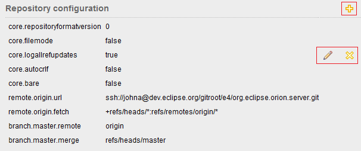
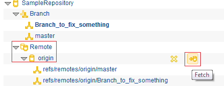
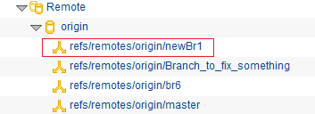
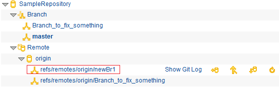
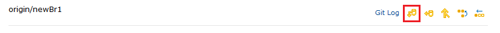
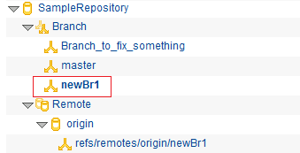
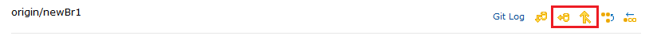
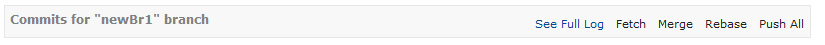
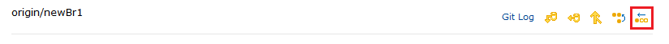
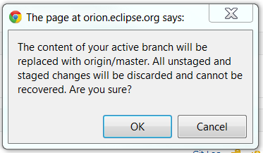

The Repositories page allows you to view and manage the Git repositories associated with your Orion account. When you visit this page you will see a list of all Git repositories you currently have cloned.
To see detailed information about a repository, click its name. The detailed view includes all the usual Git repository details such as name and url. You can find the index state and list of incoming and outgoing commits for the active branch. You will also see the list of the latest branches and tags. To see full lists, click View All links.

The bottom of the repository page shows the configuration of the repository. On the main page you will see just user.*. To see the full list, click View All. From here you can add additional configuration properties to the repository, and change or delete properties.

Create a new empty repository by clicking Init Repository on the tool bar, or click Clone Repository to clone an existing Git repository. Cloning will produce a dialog where you enter the Git repository URL, and optionally any credentials required to access or modify the repository.
You can delete an existing repository, navigate to the Navigator page or to Git Status page using actions in the Repository section.

Clicking on the Delete action will pop up a confirmation dialog and you can decide if you want to delete it. Clicking Show in Navigator navigates to the Navigator page.
Once a repository is created or cloned, the master branch is set as the current branch. You can create your own branch, work on it and merge it back to master. Go to the Branches section and click New Branch action.

Input the branch name. Hit 'Enter' to create the branch.

Once a new branch is created, it is in the local repository but not in the remote yet. Next to each branch is a row of buttons as below. You can manage the branches using these actions.

From the branch actions, click Remove Branch to delete a local branch. A confirmation dialog will pop up and you can decide if you want to delete it.

You can navigate to the Log page to see details on the branch. From the actions next to the branch, the link Git Log will take you to the Git log page.
You can also perform a merge action if there is a remote tracking branch. But normally the remote branch does not exist for a newly created branch until you push it. From the actions next to the branch, click the Merge icon to merge from the remote tracking branch into your local working copy.

Please note that you can achieve the same result by performing the same action in Log page or Status page.
The newly created branch branch is not set as the current branch yet. Let's say you want to work on this branch now. From the actions next to the branch, click on the last action to checkout the branch.

Once a branch is checked out, it is shown as bold. Please note that from now the Git Status page will show the content on this branch.

Once a branch is checked out, the actions next to a branch appear as follows:

Clicking on the Push All action will create a remote tracking branch if there is not one yet.
Please note that you can achieve the same result by performing the same action in Log page or Status page.
If somebody else has pushed their branches into their repository/Remote/origin but those branches do not appear in your repository/Remote/origin yet, you have to fetch them first. Let's say somebody has pushed a branch called newBr1 in the remote. See the Remote/origin row in the Remotes section for the action icons.

Click Fetch, and enter your credentials if required to access the repository. The remote branches are updated.

The main page for a repository only shows some of your recently used local branches. To view remote branches, click View All in the toolbar at the top of the Branches section.
Many of the actions on a remote branch are different from those on a local branch, but the Git Log and Merge actions are the same. The Git Log action will navigate to the same log page but with the remote branch content. You can also switch to the local branch content there. Next to the remote branch name row in the Remote table, you will find the actions for managing that remote branch.

Normally a newly fetched remote branch is not in your local branches yet. You have to checkout in order to work on it. From the actions next to the branch, click the Checkout icon.

The remote branch is checked out as the current local branch.

Please note that if you try to check out a remote branch that already has a local branch in your repository, you will get a warning message : "the local branch already exists".
You can fetch a remote branch and merge it to your active local branch. First, click View All in the Branches section of the page. This will show all local and remote (tracking) branches associated with the repository. From the actions next to a remote branch, there is a button to Fetch the latest contents from the remote into your personal remote tracking branch. Then, you can Merge or Rebase those changes into your active local branch.

If you want to fetch and merge changes for your active branch, you can also use actions in Commits section.

Please note that you can achieve the same result by performing the same actions in Log page or Status page.
You can also reset a local branch to replace with the contents of the remote tracking branch.

From the actions next to the remote branch, click the Reset icon to reset the local branch content. A dialog will pop up asking for confirmation.

This document is maintained in a collaborative wiki. If you wish to update or modify this document please visit http://wiki.eclipse.org/Orion/Documentation/User_Guide/Reference/Repositories_page